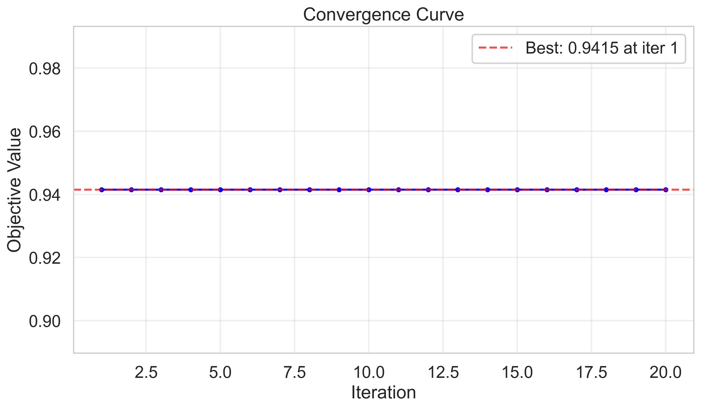
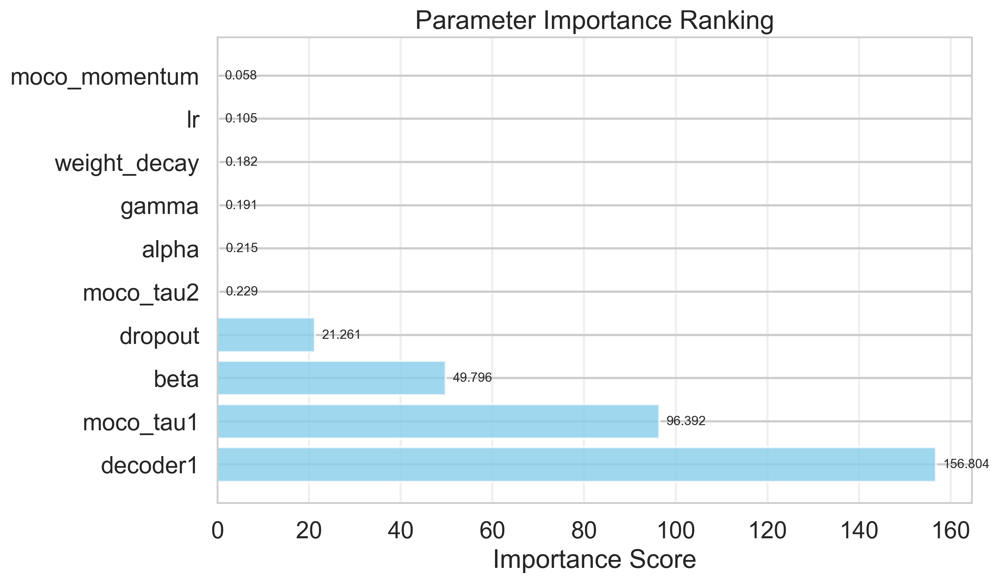
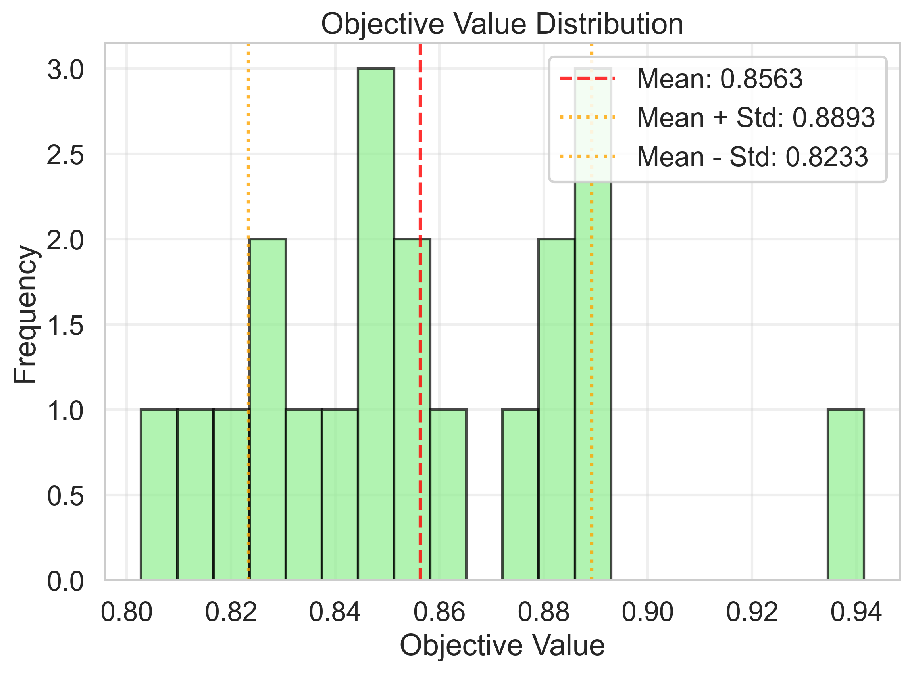
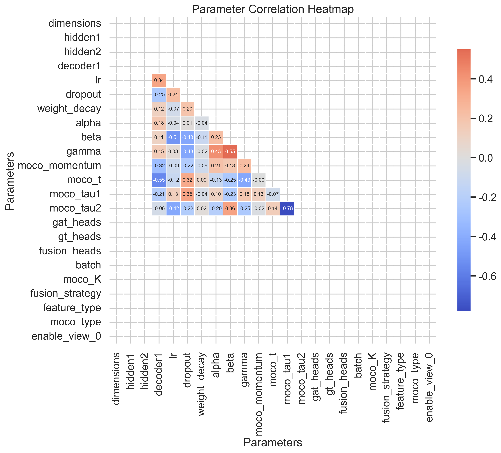
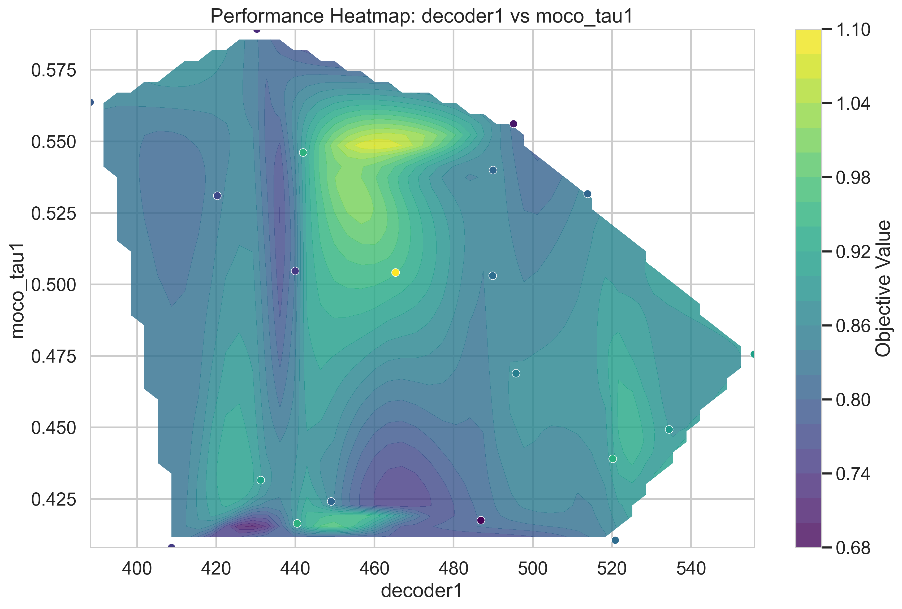
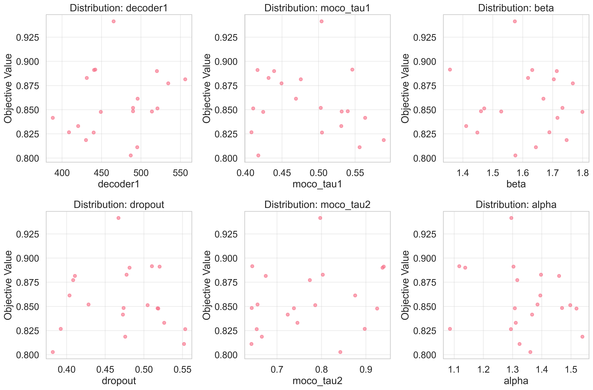
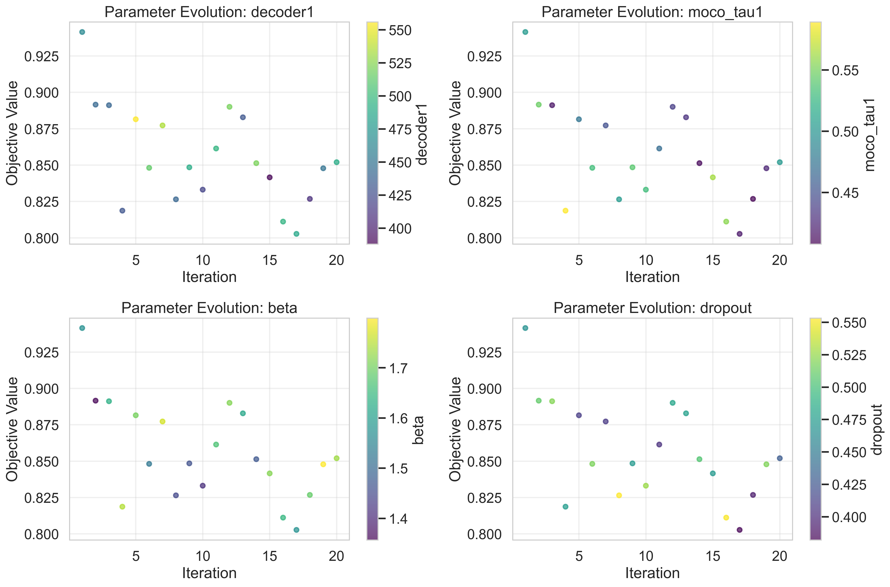
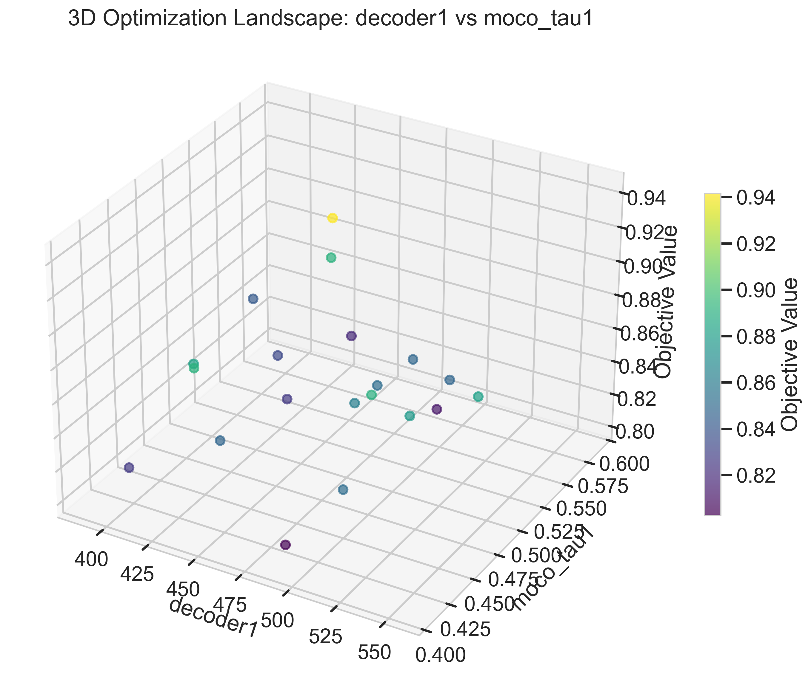

生成时间: 2026-02-01T16:21:16 | 作者: AutoDL优化系统
迭代次数: 1
目标函数值: 0.941484
评估时间: 308.82秒
| 参数名 | 值 |
|---|---|
| dimensions | 320 |
| hidden1 | 256 |
| hidden2 | 32 |
| decoder1 | 465.3335725455138 |
| lr | 0.000733755630323859 |
| dropout | 0.4670142041446821 |
| weight_decay | 2.186689641927814e-06 |
| alpha | 1.295536556783128 |
| beta | 1.5735863183010976 |
| gamma | 1.0717426729960984 |
| moco_momentum | 0.974775921094384 |
| moco_t | 0.8816865628301471 |
| moco_tau1 | 0.5041551754126347 |
| moco_tau2 | 0.7969560650409876 |
| gat_heads | 2 |
| gt_heads | 4 |
| fusion_heads | 4 |
| batch | 32 |
| moco_K | 4096 |
| fusion_strategy | self_attention |
| feature_type | one_hot |
| moco_type | double_tau |
| enable_view_0 | true |
优化过程在第1次迭代后收敛，最终改进幅度为0.0000，平台期长度为19次迭代。
分析了11个参数的敏感性。高影响参数（9个）：decoder1, moco_tau1, beta, dropout, moco_tau2, alpha, gamma, weight_decay, lr。中等影响参数（1个）：moco_momentum。最重要的参数是decoder1（敏感性得分：156.8044）。
| 排名 | 参数名 | 敏感性得分 | 相关系数 | 显著性 |
|---|---|---|---|---|
| 1 | decoder1 | 156.8044 | 0.1948 | high |
| 2 | moco_tau1 | 96.3921 | -0.1780 | high |
| 3 | beta | 49.7957 | -0.0059 | high |
| 4 | dropout | 21.2609 | -0.0347 | high |
| 5 | moco_tau2 | 0.2291 | 0.2291 | high |
| 6 | alpha | 0.2155 | -0.2155 | high |
| 7 | gamma | 0.1910 | -0.1910 | high |
| 8 | weight_decay | 0.1816 | 0.1816 | high |
| 9 | lr | 0.1048 | 0.1048 | high |
| 10 | moco_momentum | 0.0576 | 0.0544 | medium |







